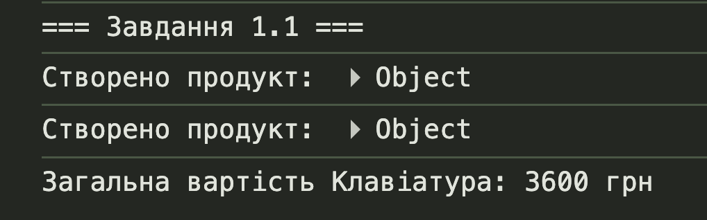
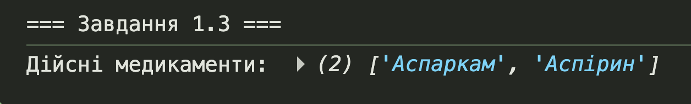
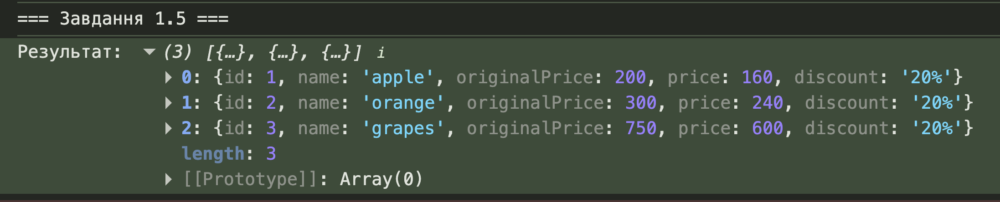
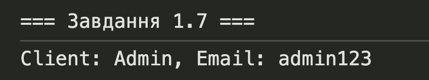
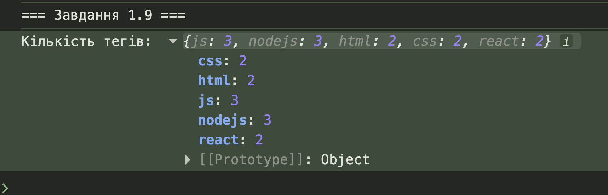
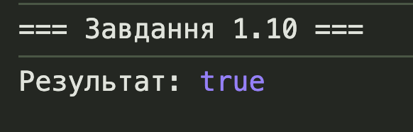

Тема лабораторної роботи №5
Тема:
Масиви, функції колбеків, класи. Обробка даних та структур у JavaScript.
Мета лабораторної роботи:
Закріпити вміння роботи з масивами, об'єктами, методами масивів, callback-функціями та класами.
Місце розташування звітних матеріалів:
HTML-звітного документу (цей документ), власного WEB-застосунку та репозиторію із вихідними файлами. Посилання наведені в наступних пунктах меню.
Посилання на репозиторії
- Репозиторій власного WEB-застосунку: https://github.com/Homa4/lab5-WEB.git
- Репозиторій звітного HTML-документу: https://github.com/Homa4/IM-33_-appRECORD-NabokaTimur-FIOT-2025
Посилання на живі сторінки
- Жива сторінка власного WEB-застосунку: https://homa4.github.io/lab5-WEB/
- Жива сторінка звітного HTML-документу: https://homa4.github.io/IM-33_-appRECORD-NabokaTimur-FIOT-2025/
Завдання №1
Умова:
Створити функцію createProduct(obj, callback), яка приймає
об'єкт товару та callback-функцію. Функція додає до об'єкта унікальний
ідентифікатор і викликає callback з цим об'єктом.
Код завдання:
function createProduct(obj, callback) {
const product = { ...obj, id: Date.now() };
callback(product);
}
function logProduct(product) {
console.log(`Product: ${product.name}, price: ${product.price}`);
}
function logTotalPrice(product) {
console.log(`Total: ${product.price * product.qty}`);
}
function runTask1_1() {
const obj = { name: "Drone", price: 2000, qty: 3 };
createProduct(obj, logProduct);
createProduct(obj, logTotalPrice);
alert("Результат в консолі (F12)");
}Результат виконання:

Завдання №2
Умова:
Є об'єкт з назвами медикаментів та датами придатності. Вивести масив назв медикаментів термін придатності яких ще не вийшов, відсортованих за датою від найближчої до найдальшої.
Код завдання:
function runTask1_3() {
const medicines = {
"Аспірин": "2023-05-01",
"Парацетамол": "2026-11-12",
"Цитрамон": "2025-01-10",
"Ібупрофен": "2024-07-28"
};
const now = new Date();
const result = Object.entries(medicines)
.filter(([name, date]) => new Date(date) > now)
.sort((a, b) => new Date(a[1]) - new Date(b[1]))
.map(([name]) => name);
console.log(result);
alert("Результат в консолі (F12)");
}Результат виконання:

Завдання №3
Умова:
Є масив товарів. Створити новий масив, в якому кожен товар має знижку 20%, та додати до кожного товару унікальний ідентифікатор.
Код завдання:
function runTask1_5() {
const products = [
{ name: "apple", price: 200 },
{ name: "orange", price: 300 },
{ name: "grapes", price: 750 }
];
const result = products.map((p, i) => ({
...p,
price: p.price * 0.8,
id: i + 1
}));
console.log(result);
alert("Результат в консолі");
}Результат виконання:

Завдання №4
Умова:
Створити клас Client з приватними полями login та email.
Реалізувати геттери та сеттери для цих полів.
Код завдання:
class Client {
#login;
#email;
constructor(login, email) {
this.#login = login;
this.#email = email;
}
get login() {
return this.#login;
}
set login(v) {
this.#login = v;
}
get email() {
return this.#email;
}
set email(v) {
this.#email = v;
}
}
function runTask1_7() {
const c = new Client("john_doe", "john@gmail.com");
console.log(c.login, c.email);
alert("Результат у консоліі");
}Результат виконання:

Завдання №5
Умова:
Є масив твітів з тегами. Порахувати кількість використань кожного тегу та вивести об'єкт з результатами підрахунку.
Код завдання:
function runTask1_9() {
const tweets = [
{ tags: ["js", "nodejs"] },
{ tags: ["html", "css"] },
{ tags: ["js", "react"] },
{ tags: ["js", "html"] },
{ tags: ["nodejs", "react"] }
];
const tagCount = tweets.flatMap(t => t.tags)
.reduce((a, t) => {
a[t] = (a[t] || 0) + 1;
return a;
}, {});
console.log(tagCount);
alert("Результат у консолі");
}Результат виконання:

Завдання №6
Умова:
Написати функцію checkBrackets(str), яка перевіряє
правильність розстановки дужок у рядку (круглих, квадратних, фігурних).
Код завдання:
function checkBrackets(str) {
const stack = [];
const pairs = { ")": "(", "}": "{", "]": "[" };
for (const char of str) {
if ("([{".includes(char)) stack.push(char);
if (")]}".includes(char)) {
if (stack.pop() !== pairs[char]) return false;
}
}
return stack.length === 0;
}
function runTask1_10() {
const str = "function test() { return [1,2]; }";
console.log(checkBrackets(str));
alert("Результат у консолі");
}Результат виконання:

Висновки
Під час виконання лабораторної роботи №5 було вивчено роботу з масивами, callback-функціями, класами та їх методами у JavaScript. Отримано практичні навички використання методів масивів (map, filter, reduce, flatMap), роботи з об'єктами, створення класів з приватними полями та реалізації складних алгоритмів обробки даних.